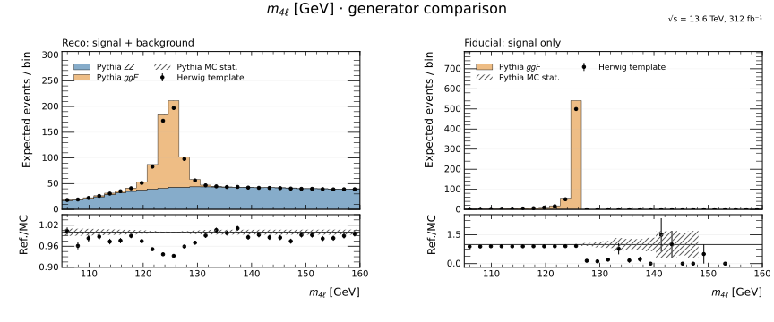

Full accepted samples · 19 November 2026 · 14:39 UTC
Kinematic distributions
Explore the generator comparison and the signal before and after OHB reweighting.
← Current research report · Higgs-region ZZ transport · Detailed history


Reading the figures
Generator comparisons: left is reconstructed ggF + ZZ in 105 < m₄ℓ < 160 GeV; right is fiducial ggF signal only, with no reconstructed-selection requirement. Expected yields use 312 fb⁻¹. Herwig is a template prediction, not a Poisson data draw. The Pythia components retain their physical relative normalization.
SMEFT comparisons: left is reconstructed Herwig signal in 115 < m₄ℓ < 130 GeV; right is its fiducial signal. The coefficient values are −0.1, 0 and +0.1 at Λ = 1 TeV. The shape view normalizes each curve within its selected region; the yield view preserves the full rate change. Ratio uncertainties include covariance because all three curves reuse the same events, including the normalization covariance for shape ratios.
Signed event weights are retained. Bin contents are sums of weights and finite-MC variances are sums of squared weights. Underflow and overflow are included in the edge bins, following the repository plotting scripts. Undefined angles are omitted only from the affected observable; zero-denominator ratios appear as gaps. These bands do not include experimental, modeling or finite-training uncertainties.
The SMEFT deformation covers direct e/μ Higgs decays; tau channels remain at unity. Selected regions retain millions of effective signal events. Low-mass tails dominate the variance before selection, so the inclusive preselection normalization is not used for these comparisons or the physical pseudo-data construction.
The seven unfolding inputs are cos θ*, cos θ₁, cos θ₂, Φ, Ψ, mZ₁ and mZ₂. The m₄ℓ and pT₄ℓ figures are validation projections. These figures precede background removal and unfolding.